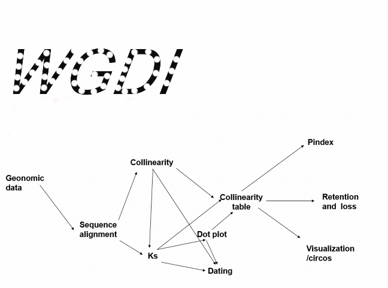

usage¶
{kind=link}
Point open the Centents on the left.
We support the use of WGDI to complete the work on the icon number.
Common file¶
*.conf
The .conf file contains the parameters required for the corresponding operation, which are read when wGDI is performed.
Using wgdi -* ? > *.conf to generate needs to be in the same directory as the file mentioned in the parameter.
And total.conf contains all the parameters, using wgdi -conf ? > total.conf is generated.
In the conf file: gff1, lens1, gff2, and lens2 represent the files of species 1 and 2, respectively.
We will not explain in detail when we explain the parameters.
genome1_name and genome1_name represent the names of species 1 and 2, respectively. These parameters will be used to label the picture for your convenience.
gff
Column |
Information |
Explanation |
1 |
Chr |
Chromosome number |
2 |
ID |
Gene name |
3 |
Strat |
The location of the gene |
4 |
End |
Gene ending position |
5 |
Direction |
Direction of the gene sequence |
6 |
Order name |
Full name |
lens
Column |
Information |
Explanation |
1 |
Chromosome number |
|
2 |
Chr lens |
Number of chromosome sequences |
3 |
Number of chromosome genes |
|
*_random |
Not slicing the genes on the chromosomes |
The explosion is the output file of the blast+ ,available in the -6 and m-8 formats..
Convenient¶
You can use
wgdi -conf ? > total.confgenerates a total.conf file with all parameters, and when you modify the parameters and run WGDI, WGDI will only read the parameters corresponding to the total.conf file to execute your command.We put in the example of git’s official website, where all parameters are in the total.conf file.
When a folder runs WGDI, WGDI automatically generates results for you in the background, and you can exit the folder and go to the next folder to start working.
WGDI performs the .conf file for the current folder, so you can copy the .conf file in bulk and make parameter modifications that apply to the target folder.
{kind=link}